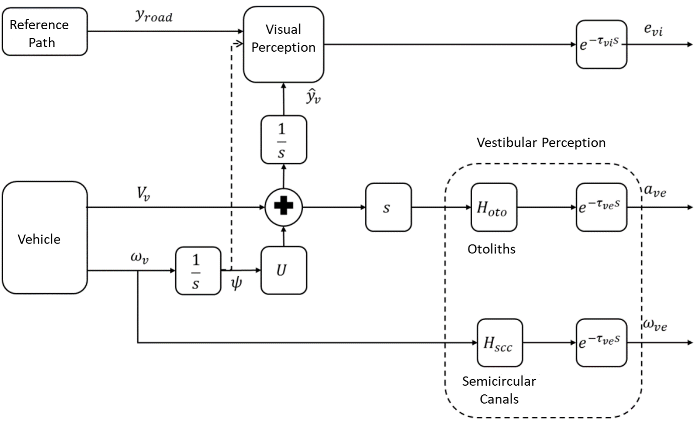
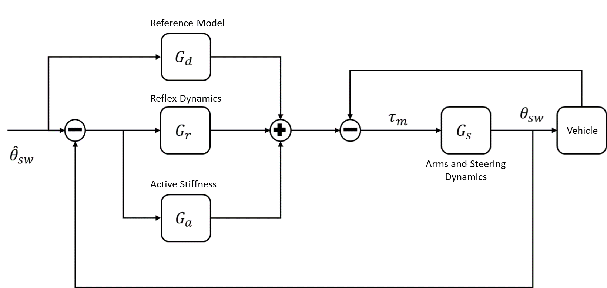
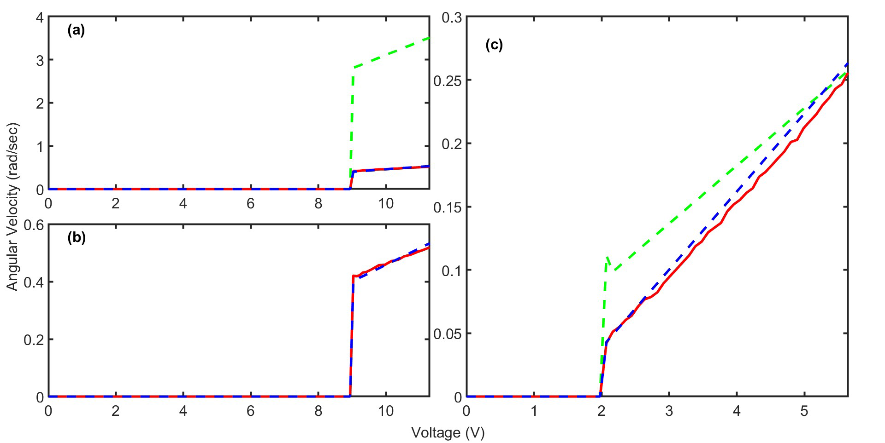

<div id="portfolio-page" class="portfolio-page-content">
    <div class="container">
        <!-- Portfolio Navigation -->
        <div class="portfolio-nav">
            <div id="portfolio-close-button" class="portfolio-close-button">
                <a href="#portfolio"><i class="fa fa-close"></i></a>
            </div>
        </div>

        <!-- Portfolio Title -->
        <div class="portfolio-title">
            <h1>M.Sc. Thesis: Design and Implementation of Model Predictive Control for Improving Stability of a Vehicle Teleoperation System</h1>
        </div>

        <div class="row">
            <!-- Images / Carousel -->
            <div class="col-sm-7 col-md-7 portfolio-block">
                <div class="owl-carousel portfolio-page-carousel">
                    <div class="item">
                        
                    </div>
                    <div class="item">
                        
                    </div>
                    <div class="item">
                        
                    </div>
                </div>

                <script type="text/javascript">
                    jQuery(document).ready(function($){
                        $('.portfolio-page-carousel').owlCarousel({
                            smartSpeed: 1200,
                            items: 1,
                            loop: true,
                            dots: true,
                            nav: true,
                            navText: false,
                            margin: 10
                        });
                    }); 
                </script>
            </div>

            <!-- Project Description -->
            <div class="col-sm-5 col-md-5 portfolio-block">

                <ul class="project-general-info">
                    <li>
                        <i class="fa fa-user"></i> 
                        <strong>Collaborators:</strong>
                        <a href="https://www.researchgate.net/profile/Ali-Nahvi" target="_blank">Ali Nahvi</a>, 
                    </li>  
                    <li>
                        <i class="fa fa-calendar"></i> September 2018 - February 2022
                    </li>
                </ul>
                <div class="block-title">
                    <h3>Motivation</h3>
                </div>
                <p class="text-justify">
                    In autonomous and semi-autonomous vehicles, the driving path is typically computed by an external system, which then sends the desired
                    steering angle to the vehicle. However, occurrence faults in the steering motor, particularly deviations from its optimal operation and the
                    resulting asymmetry in its behavior, can reduce path-tracking accuracy and compromise vehicle safety. Classical controllers, such as
                    PID, usually fail to maintain reliable performance under these conditions. Furthermore, driver behavior under such faults can
                    be complex and nonlinear, and existing models do not fully capture these effects. These challenges highlight that controlling the
                    steering system under motor faults while accounting for realistic driver behavior is a critical and practical problem for
                    ensuring the safety of autonomous vehicles.
                </p>
                <div class="block-title">
                    <h3>Results</h3>
                </div>
                <p class="text-justify">
                    To address these challenges, we proposed a Hybrid Model Predictive Control (MPC) approach, incorporating separate modes for clockwise and
                    counterclockwise motor operation to effectively handle asymmetry. We then suggested modeling motor faults as parametric uncertainties rather
                    than external disturbances, which eliminates the need for online disturbance computation and allows the controller to maintain fast and
                    robust performance under varying conditions. For realistic simulation of vehicle dynamics, a comprehensive driver model was integrated,
                    combining neuromuscular (agonist and antagonist muscles), perceptual (otolith and semicircular canals), and physical dynamics components. The control system was implemented on a real remote-controlled vehicle,
                    where one operator acted as the external path-planning system while the vehicle followed the desired steering commands under faulty conditions.
                    Additionally, to overcome computational limitations of real-time MPC, an explicit MPC (eMPC) and a hybrid online-offline MPC strategy were employed.
                    Finally, the performance and stability of the proposed control strategy were rigorously validated through comparisons with classical PID control and
                    through Lyapunov-based and cost-function-based stability analyses. The results showed that, unlike PID, the MPC controller could stabilize the system.
                    Moreover, the eMPC method achieved a significantly better tradeoff between performance and computational cost compared to other methods. </p>
                <!-- Software and Frameworks -->
                <div class="tags-block">
                    <div class="block-title">
                        <h3>Software and Frameworks:</h3>
                    </div>
                    <ul class="tags">
                        <li><a>MATLAB</a></li>
                        <li><a>Simulink</a></li>
                        <li><a>CarSim</a></li>
                        <li><a>C++</a></li>
                    </ul>
                </div>
            </div>
        </div>
    </div>
</div>
